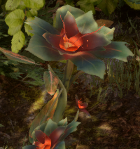
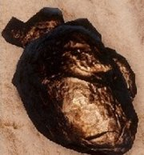
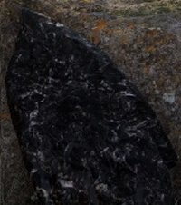
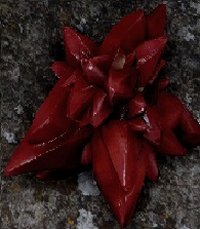
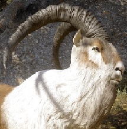
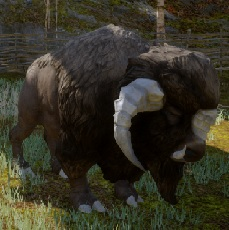
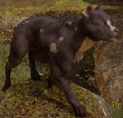

Terras Distantes
O Terras Distantes compreendem uma boa quantidade de terras agrícolas férteis e, como tal, é povoado com muitas fazendas em toda a área. Seu assentamento principal é na Aldeia Rocha Vermelha (Redcliffe village), situada nas colinas ocidentais de Ferelden e protegido pelo Castelo Rocha Vermelha. Desde o fim da Quinta podridrão, houve um fluxo muito grande de colonos saindo da Aldeia Rocha Vermelha procurando fugir das lembranças desagradáveis das criaturas sombrias (Darkspawns) e dos outros eventos obscuros que aconteceram com a Redcliffe durante a podridrão.
Plantas
| Raiz Élfica | Encontrada em todo mapa próximo a árvores. A planta que você acha em quase, senão todas, as regiões do jogo. |

|
| Lótus de Sangue | Encontrada perto do "Acampamento do Lago Superior", na verdade ela é encontrada em volta de lagos. |

|
| Erva Comum | Existe algumas dessas plantas nas docas da "aldeia rocha vermelha". É bastante encontrada perto da água principalmente. |

|
| Cogumelo das Profundezas | Perto de "Thelm Mão-Dourada, O tentador", quando você avistar esse ponto continue andando e olhe as pedras que ele vai estar em volta na pedra. |

|
| Embrium | Toda mapa, em lugares variados, principalmente próximo a árvores. |  |
| Graça de Cristal | Encontrada entre "Thelm Mão-Dourada, O Tentador" e "Vivenda Grande Floresta" mais ou menos. |

|
| Raiz Élfica Real | 1°) No "Esconderijo dos Magos" tem duas e uma delas está do lado de lá da porta que se abre com o Ocularum. 2°) Em "Acampamento dos templários" no fundo do acampamento. 3°) Entre a porta para Valamar e a cachoeirra e do lado de fora dessa cachoeirra. Para aqueles que não sabem onde fica a porta para valamar está próxima ao "acampamento do Lago Superior". 4°) Também temos mais duas no Vale da Dama Shayna que está depois do acampamento pôr do sol (Lar do Dragão). |

|
Minérios
| Ferro | Minério mais fácil de ser encontrado, em quase todas as rochas. |  |
| Onix | Pode ser encontrada no "Esconderijo dos Magos". Também em cavernas que estão entre a "Vivenda Grande Floresta" e um acampamento que tem próximo. |  |
| Draconita | Encontrada em uma caverna próxima de "A Tentadora Queima", outras cavernas e mais para o Sudoeste do mapa. |  |
Outros
| Carneiros | Mais fácil que encontrar Raiz Élfica... É ENCONTRAR CARNEIROS!. Aparecem em todo o mapa e dropam Carne de carneiro e outros itens relacionados. |  |
| Raposa do Deserto | Também são achados em todo mapa tanto quanto carneiros e dropam pele de raposa. |

|
| Lobos Sombrios | Na fazendo do mestre Dennet, pegue a missao com a mulher dele para "Dar um jeito nos lobos" que, na verdade, estão sendo controlados pelo demonio do medo. |

|
| Urso | Encontrados em volta do acampamento da floresta. E pode acreditar que quando você achar um, vai aparecer um atrás do outro e, você vai se perguntar da onde ta saindo tanto urso huehueheu. |

|
| Drûfalos | Somente na fazenda do Dennet. Difíceis de matar(Se você for nível menor ou igual) por causa da guarda que eles têm. |  |
| Nug | É muito semelhante a um porquinho. Em diversos lugares do mapa, principalmente em cavernas. |

|
| Filhote de Dragão | Justamente na área em que antecede a sua batalha contra o Dragão Montês Feraldano. |

|
| Mambari | Tem a aparência de um cachorro selvagem. Entre a "Vivenda da Floresta" e "Tyrdda Voando para seu amante". |  |
Vendedores
Caso você não esteja com vontade de sair por aí procurando alguns materiais de fabricação, você comprar alguns deles com o vendedor que se localiza na Encruzilhada. Nele é possível comprar os seguintes materias de fabricação, alías o estoque dele é ilimitado, então pode fazer a festa e comprar a vontade: Raiz Élfica, Pele de Raposa do Deserto, Pele de Nug, Pele de Drûfalo, Pele de Bronto, Lótus de Sangue, Escamas Filhote de Dragão, Erva Comum, Couro de Carneiro e Couro Canino. Todos apenas 20 moedas! ISSO MESMO VOCÊ NÃO LÊU ERRADO, EU DISSE 20 MOEDAS!
Na Aldeia Rocha Vermelha existe 3 Vendedores Distintos:
1°) Uma mulher que vende Armas e Aprimoramentos para as mesmas.
2°) Um Homem que vende Armaduras e Aprimoramentos para Armaduras.
3°) E um Anão Livreiro que vende Planos de Armas e Armaduras.
 Clique aqui para subir.
Clique aqui para subir.